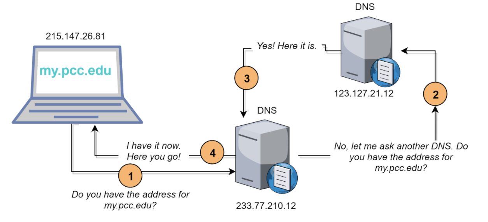

Lesson 3: Addresses, Names, and Protocols
Big question
How do unfamiliar devices agree on whom a message is for, which program should receive it, and what all its bits mean?
In this lesson we'll look at the agreements, called protocols, that make that possible. We'll design a tiny protocol of our own for a game, see how the internet stacks its protocols in layers, and then meet the three kinds of "address" every message uses: IP addresses, ports, and domain names. (And we'll see why none of them is the same thing as a person!)
Protocols
Suppose a note says only 100000010. Is that an address? A game move? A number? Part of a picture? Even if two people agree it's a game move, they still need to know where the recipient field ends, which squares exist, and how a reply reports a hit. On their own, bits don't mean anything at all. They only mean something once the sender and the receiver have agreed on how to read them.
A protocol is an agreed set of rules for exchanging information. It can define:
- the order and size of fields;
- what each value means;
- who sends first and which replies are valid;
- how errors or missing messages are handled; and
- how an interaction begins and ends.
Human conversations have protocols too. “Hello” opens an exchange; a raised hand requests a turn; a mailing address follows a shared order. Some are written down as standards and some are just social convention, but either way they only work if everyone involved has the same expectations (think about how awkward it is when one person goes in for a handshake and the other goes in for a hug).
Design a Battleship protocol in text
Say we have four players, numbered 1 through 4. Each has a four-by-four board with rows A through D and columns 1 through 4. They can't speak and they can't rely on color. Every move has to be one line of zeros and ones, sent asynchronously in a message.
Here's one possible fixed-length protocol — not the only good design, just a design:
| Field | Length | Meaning |
|---|---|---|
| TO | 2 bits | Player 1 = 00, 2 = 01, 3 = 10, 4 = 11 |
| FROM | 2 bits | The same two-bit player mapping |
| TYPE | 1 bit | 0 = shot; 1 = result |
| ROW | 2 bits | A = 00, B = 01, C = 10, D = 11 |
| COLUMN | 2 bits | 1 = 00, 2 = 01, 3 = 10, 4 = 11 |
| RESULT | 1 bit | For a result, 0 = miss and 1 = hit; ignored in a shot |
Using spaces to show the field boundaries, “player 1 to player 3: fire on A2” comes out as 10 00 0 00 01 0. That final filler bit gets ignored because the type is shot. “Player 3 to player 1: miss on A2” is 00 10 1 00 01 0. On the wire the bits could sit right next to each other; both programs know where the boundaries fall because the protocol says so.
Even a design this small has tradeoffs. A message that's always ten bits long is easy for a program to read, but it wastes one bit on every shot. A design where messages can be different lengths could save that bit, but then it needs some other way to tell where one message ends and the next begins. And the protocol needs a rule that isn't about bits at all: a result has to match a shot somebody actually fired. Otherwise what stops player 1 from getting a "hit" reply about a square they never fired at?
The internet has exactly these problems, just at a vastly bigger scale. It has to say who a message is for, mark where each piece of information starts and stops, agree on what everything means, and figure out what to do when something doesn't go as expected.
Layers
Now, the internet isn't one enormous protocol that handles radio signals, routing, reliability, and web pages all at once. Nobody could write that document, and nobody could ever change it! Instead it's a stack of layers. Each layer does one job for the layer above it, and relies on the layer below it to do its job. That way people can improve one layer without having to redesign everything else.
| Layer | Question it answers | Examples |
|---|---|---|
| Application | What do programs request and reply? | HTTP for web resources, DNS for name lookups, email protocols |
| Transport | Which program should receive the data, and what delivery behavior does the application need? | TCP, UDP, ports |
| Internet | Which host or network should receive this packet across interconnected networks? | IP addresses and routing |
| Link | How does a packet cross one local link? | Wi-Fi, Ethernet, cellular connections; underneath them, radio, copper, or fiber |
Layering is an example of abstraction, which means hiding the details you don't need right now. Your browser can ask for a page without knowing whether the next link is Wi-Fi or a cable. A router can pass along an IP packet without knowing whether it's carrying a poem, a bank transfer, or a slice of video. The lower-level details still matter, but not every piece of software has to deal with all of them at once.
Encapsulation
As your data moves down the stack, each layer wraps it in its own information, usually in a header, like the packet headers from Lesson 2. This wrapping is called encapsulation.
- The application creates a web request such as “send me the home page.”
- TCP adds transport information including source and destination ports and sequence information.
- IP adds source and destination IP addresses.
- The local-link technology wraps the IP packet for its next hop and carries it as signals.
At the other end, everything gets unwrapped in reverse order. The link layer gets the packet across the last local connection, IP makes sure it reached the right computer, TCP hands the data, in order, to the right program, and the web server reads the actual request. Each layer reads the part it understands and leaves the rest alone.
The mail works in a similar way. You write a sentence on a card, put the card in an addressed envelope, and then the post office puts the envelope in a mail sack that goes on a particular truck. The truck driver never has to read your sentence! No analogy is perfect, but this one shows why one message can end up wrapped in several different kinds of addresses.
IP addresses
An IP address is the number the network uses to route packets to the right place. An IPv4 address is 32 bits long, usually written as four numbers like 203.0.113.25. That allows about 4.3 billion different addresses, which sounds like plenty until you start counting all the phones, laptops, game consoles, and smart doorbells in the world. The newer IPv6 uses 128 bits, written in hexadecimal like 2001:db8::25, which gives it an enormously larger number of addresses.
You'll often hear that "every device has one unique address," but the real situation is messier than that:
- A device can have several interfaces and several addresses — Wi-Fi, cellular, and temporary IPv6 addresses, for example.
- An address can change when a device reconnects. This is a dynamic address.
- Home devices often use reusable private IPv4 addresses such as
192.168.1.20. The router uses network address translation, or NAT, so many devices share one public IPv4 address. - One server name can lead to several IP addresses, and many sites can share infrastructure behind one address.
So an IP address tells the network where to deliver packets at a particular moment. It doesn't tell you who a person is. Companies and investigators can combine an IP address with times, account records, cookies, and their internet provider's logs to make educated guesses, but "this address did it" doesn't automatically mean "this person did it." There might be a whole household, a library, an office, a VPN, or a cellular company's customers behind one public address.
Ports
Reaching the right device isn't enough. Your laptop may be browsing the web, synchronizing files, and joining a game all at the same time. A port number helps a transport protocol deliver incoming data to the correct program or service.
If an IP address is an apartment building's street address, a port is the apartment number. (It isn't a perfect analogy, since ports are just numbers in software and not actual rooms, but it shows how delivery happens in two stages.) By convention, ordinary web traffic (HTTP) uses port 80, and secure web traffic (HTTPS) uses port 443. Your own computer picks a temporary port number for its side of the conversation, so the replies come back to the right program.
Put the protocol, the IP address, and the port together and you've pinned down one particular conversation much more precisely than an IP address alone could. Firewalls use these to decide what traffic to let through or block, although modern apps and encryption make the real rules a lot messier than that.
DNS
People like names, such as pcc.edu, but IP routes packets using numbers. The Domain Name System, or DNS, is what connects the two. It's spread across thousands of servers, and it keeps records that connect names to things like IP addresses. People often call it the internet's phone book, but it works more like a set of directories that point you to other directories, with a lot of remembering-the-answer along the way.
When you request www.example.com, a simplified lookup goes like this:
- Your device asks a recursive resolver — often run by an ISP, an institution, or a DNS service you've chosen. The resolver checks its cache first.
- If necessary, the resolver asks the DNS root system where to find information about the
.comtop-level domain. - A
.comname server points toward the authoritative name servers forexample.com. - An authoritative server supplies the requested record for
www.example.com. - The resolver hands the result back to your device and caches it for a stated period, so it doesn't have to repeat all those steps right away.

Why bother with names at all? Because a name can stay the same while everything behind it changes. A site can move to a completely different server, update its DNS records, and its visitors never have to learn a new address. But that also means everyone depends on DNS working. A completely healthy web server can seem to vanish if its DNS records, or the resolver you're asking, stop working. (Your browser will usually tell you something like "the server's IP address could not be found," which is the giveaway that the name lookup is what failed.)
Who controls names and addresses
Domain names don't just exist out in nature, either. Somebody has to register one through a company called a registrar; a registry manages each ending, like .com or .edu; and ICANN, together with other organizations, coordinates the whole worldwide system so that no two people get the same name. And a domain can be fought over, suspended, transferred, or simply lost if somebody forgets to renew it.
DNS is also a place where somebody can step in and control what you see. A school or a government can set up its DNS resolvers to refuse to answer for certain names, or to give a different answer. Ordinary DNS lookups can often be seen by whoever runs the network you're on, although newer encrypted versions of DNS can hide them for part of the trip. Blocking a name in DNS doesn't actually take the site off the internet, and switching to a different resolver can sometimes get around a block, but there are other ways to block things at other layers too.
The ICANN explanation of DNS and DNSSEC traces a lookup in more detail, and the ICANN overview explains its limited coordination role — ICANN doesn't own the internet, and it doesn't generally decide what content belongs on it.
Open specifications
Internet protocols are published publicly, so that anyone can write software that works with everybody else's. A lot of the core ones are written up as Requests for Comments, or RFCs, which is a charmingly modest name for documents that are often the official standard: RFC 8200 defines IPv6, RFC 9293 defines TCP, and RFC 1034 describes how DNS works.
But "open" doesn't mean everyone can easily take part. Following a standards discussion takes time, technical background, the right language, and the confidence to show up in an unfamiliar group. And publishing a standard doesn't force any company to do a good job following it. So open standards are a really big deal (they're why software written by total strangers can work together), but it's still fair to ask whose needs were in the room when a particular agreement got made.
Everyday life and social impact
A school might block a harmful site. An employer might log connections for security. A movie studio might track down an IP address that was sharing one of its films. Each of these uses real technical evidence, but that evidence has real limits.
Take that last one. Say a log shows a public IP address sharing a file late one evening. Who's behind that address? It could be one person, or everyone in a household behind the same router, or everyone at a library, or a big pool of a cellular carrier's customers. Shared addresses, ports, and names are what let independently written programs find each other at all, but if someone treats a shared address as one person, a whole household or community can end up blamed or blocked for what somebody else did.
Blocking things with DNS cuts both ways, too. It can keep people away from malware, and it can also hide health information, journalism, or political speech. And who decides? Lots of people, each in charge of one piece: standards groups write the formats, ICANN and its partners keep names and numbers unique, registries and registrars hand out domains, network operators set up the resolvers and filters, and courts and governments make the laws everyone else has to follow.
So when someone points at an identifier as proof, what should you ask? What does it identify, and at what time? And what other evidence connects it to a particular person or action?
Try it: decode, diagnose, and revise
- Decode
00 10 1 00 01 0using the Battleship table. - The message
10 00 0 00 01 0receives no reply. Name one possible failure or ambiguity the current game protocol does not handle. - A browser reports that
example.orgcannot be found, but its server answers when reached by a known IP address. Which system is the strongest suspect, and why? - Explain why a public IP address in a log may not uniquely identify one device or one person.
Check your reasoning
- Player 3 sends player 1 a result: the shot at A2 was a miss.
- The protocol has no message ID, acknowledgment, timeout, or retry rule. The shot or reply could be lost, or the responder may not know which earlier shot a late result matches.
- DNS is the strongest suspect because routing to the server's numeric address works while translating the name fails.
- The address may be dynamic or shared through NAT, a carrier, public Wi-Fi, a workplace, or a VPN; time and other records are needed.
Connection to the Week 2 assignment
In Part 1 of the Week 2 Assignment you'll trace a real website loading, and in Part 3 you'll figure out where things broke in a few everyday situations. For both, try to name the job each layer is doing instead of treating "the internet" as one mysterious step. When something fails, ask which agreement broke: did the name not get looked up, did the packets have no route, did the connection get interrupted, or did the website itself fail to answer?
Lesson takeaway
Protocols are what turn a pile of bits into something two programs both understand. Layers split the work up, and encapsulation wraps your data in one layer's information after another. IP addresses get packets to the right computer, ports get them to the right program, and DNS connects names to addresses. All of this is what makes an open network possible, and it's also what gives people places to watch, block, or misidentify who's communicating.